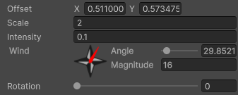

Noise Layer
Settings for layers of noise, used in Base Noise Renderer and Cloud Filter. Also updates and maintains the current state of the layer.
Inspector Settings

Offset
Controls the offset in UV space of the layer. Not meant to be modified by code directly, but can be used to find good cloud positions by hand. Useful when making a still image or a good starting position for the clouds.
Scale
The scale of the noise texture for this layer. Higher values make the noise smaller and higher detail. Lower values make the noise bigger and shows individual pixels more easily.
Ideally should be a different value for each layer, and the difference shouldn't be too small. Generally, a 50% to 100% difference in scale is enough.
Intensity
How strong this layer of noise is.
For a Cloud Filter, this value is effectively negative, as it subtracts from the clouds instead of adding.
For a Base Noise Renderer, the sum of all layers being 1 helps make the cloudiness range work without having to modify cloudiness base/mult.
Wind
Direction and speed of the wind carrying clouds. The compass is equivalent to world coordinates, unless the Wind Rotation field of the Base Noise Renderer or Cloud Filter is non-zero.
Magnitude is the speed of the wind. Separated like this to make it easy to insert real life values.
Rotation
Rotates the texture of the noise for this layer. Common use case is make the noise texture point towards the same direction as the wind.
If the texture has vertical lines, setting this value to the same as the angle of the wind will align them perfectly without any issues.